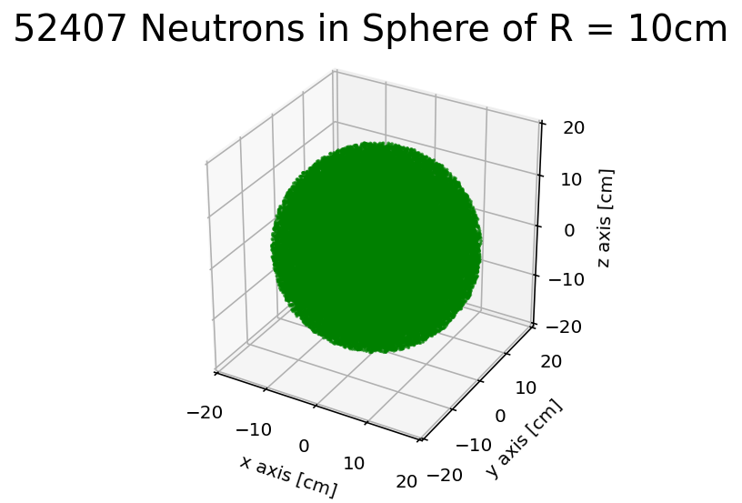
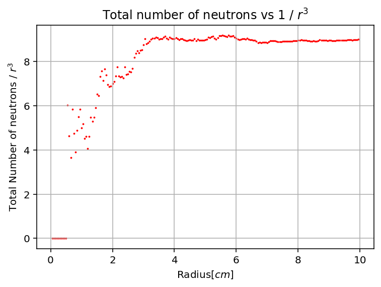
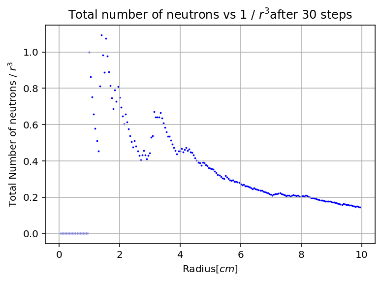
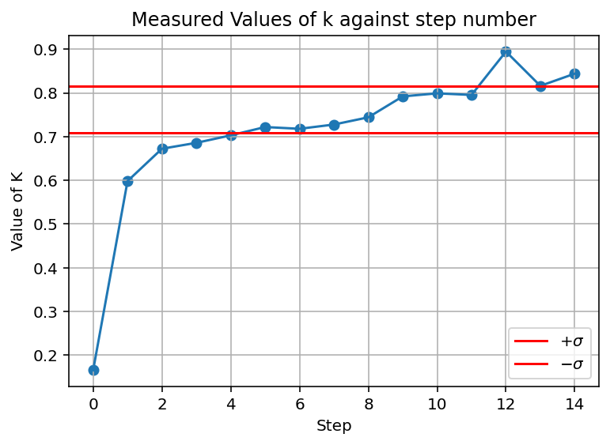

The idea of the simulation, is to simplify the set up of a reactor core to obtain preliminary values as a proof of concept for evolving the complexity of the simulation.
We'll attempt to generate a uniform distribution of neutrons inside a spherical core of solid U-235 to begin with.
Once generated uniformly and validated we'll then try 'walking' our neutrons randomly in the space, by assigning the neutrons a velocity and a random direction, then conducting 'steps' of constant time to see how they distribute.
We'll then begin adding physics, and see how our neutron distribution evolves when we give them probabilities of undergoing fission and generating more neutrons. We know that a reactor core can go sub-critical, critical, and super-critcal, where this means respectively with each step, less than one neutron is generated per lost neutron, one neutron is generated per lost neutron, and more than one neutron is generated per lost neutron.
We'll vary the initial parameters, in the starting case the parameter is just the radius of the sphere, and see what it takes for the core to go critical.
To evolve the simulation, we can mimic a real core better by adding a moderator to absorb neutrons, and by adding a mixture of U-235 and U-238 more accurately resembling real nuclear fuel.
First step is to spawn our neutrons in a sphere, and ensuring they're uniform with a validation plot. We can add them all into a box then just eliminate the ones with position vectors magnitude greater than the radius of the sphere.
While it may look like the neutrons have generated randomly, we should check their distribution with a secondary plot.
Bit of strangeness at low radius, but this will smooth out after the random walks anyways, the majority of the plot is uniform with sphere volume so that's good enough.
In a real reactor core, all the neutrons will just randomly move and bounce off other neutrons, we don't need to actually model the bounces, just randomly assign every neutron a new direction after each step is good enough.

We should see what the distribution is up to now after some steps.
Now, the distribution indicates more neutrons tend to the centre of the sphere, and they tend to drift outwards, which is what you would expect. It's a good point to mention the first optimisation step, once a neutron has left the sphere we can stop tracking it reducing our processing time per step. You might say, but can't it walk back in? Sometimes yeah, but it could also get absorbed by the moderator surrounding the core, neutrons are quite massive so they tend not to live long with any velocity.
What physics have we to add? What can a neutron do in a uranium core? In a simple case any neutron can either be absorbed, undergo fission or do nothing after each step. It takes a decent amount of cross-section maths to determine the probabilites, but once done we can just assign a probability of fission or absorbing with each step. We can get a lot deeper with it including thermal and fast neutrons and more but for now just keep it simple.
So we want to know when our core turns critical, not super easy to do in this simulation, usually if the simulation is anywhere near critical it'll go super-critical and my computer would explode before the simulation is done.
But if we keep it a little below critical (by varying our intitial value of radius), we can get some rough numbers.
We see that this is maybe about to go critical, so not a bad approximation of a critical core.
In this test it was 100% U-235 at 10cm radius sphere, actual critical value is 8.6 cm radius, so honestly pretty good.